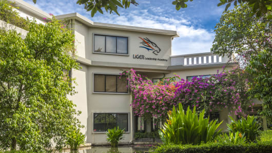

I was born on Friday 1, June 2004. I was an ordinary boy who grew up in Kampong Cham of Cambodia; It locates
on the central lowlands of the Mekong River. After I saw a first light of the a glorious world, my grandma
gave me a name "Sok-heng"; In khmer, it means peaceful and lucky. Hahaha such a great name. I don't think
that I'm lucky like my name.

I spent six years at Government school before I came to Liger Leadership Academy in Phnom Penh. It was
twisted my mind and my life.
The way I see the world from one day to anothers have changing becuase Liger provided me a lot of education.
Besides, I have joined
many events that were happening in my society. I pledge to walk on a right track to fulfill Liger's dream.

Cambodia is a Southeast Asian nation along Mekong Riverside. Cambodia has changed in many factors
such as Agriculture, infrastructure, economic, education, and etc. Cambodia was
also experienced wars, hunger, and dark period. on the other hand, Tones of stones stacked on each
other create such wonderful temples.